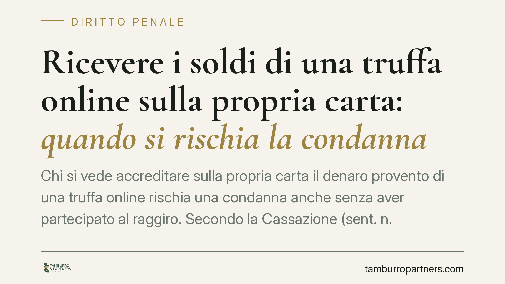

Ricevere i soldi di una truffa online sulla propria carta: quando si rischia la condanna
Chi si vede accreditare sulla propria carta il denaro provento di una truffa online rischia una condanna anche senza aver partecipato al raggiro. Secondo la Cassazione (sent. n. 15091/2026), l'accredito costituisce indizio grave: non basta negare, occorre una spiegazione alternativa credibile. Vediamo quali reati entrano in gioco e dove passa il confine tra responsabilità penale e mera ingenuità.

Il caso e la decisione
Un conto corrente, o una carta prepagata, riceve un bonifico. Poco dopo il titolare scopre che quelle somme provengono da una truffa online ai danni di un terzo. È penalmente responsabile?
La Corte di Cassazione, con la sentenza n. 15091 del 2026 (estremi da verificare alla pubblicazione integrale), ha ribadito un principio già presente nella giurisprudenza di legittimità: l'accredito del provento della truffa sulla propria carta è un indizio grave, preciso e concordante a carico del titolare. Non si tratta di prova diretta della partecipazione al raggiro, ma di un elemento che — se non contrastato da una spiegazione alternativa plausibile — può fondare la condanna.
Attenzione a un equivoco frequente: questo non significa inversione dell'onere della prova. L'accusa deve comunque dimostrare l'elemento indiziario e la sua gravità; l'imputato conserva il diritto al silenzio. Semplicemente, un indizio grave rimasto privo di qualsiasi giustificazione ragionevole può essere valorizzato dal giudice. Il silenzio non è colpa, ma non neutralizza da solo un dato oggettivo forte.
Inquadramento normativo: non un solo reato, ma diversi
Il punto delicato è capire *quale* reato viene contestato, perché le fattispecie hanno presupposti soggettivi diversi.
Concorso nella truffa (art. 640 c.p. + art. 110 c.p.). Se chi riceve il denaro ha concordato in anticipo con i truffatori di mettere a disposizione la propria carta, risponde della truffa stessa. Qui serve la prova dell'accordo, non basta l'accredito.
Ricettazione (art. 648 c.p.). Punisce chi riceve denaro di provenienza delittuosa al fine di trarne profitto. È reato doloso: richiede la consapevolezza — anche nella forma del dolo eventuale — dell'origine illecita delle somme.
Riciclaggio (art. 648-bis c.p.). Scatta quando il titolare non si limita a ricevere, ma compie operazioni idonee a ostacolare l'identificazione della provenienza (prelievi, cambio in criptovalute, ulteriori bonifici a terzi). È un reato autonomo rispetto a quello presupposto: si risponde di riciclaggio anche se l'autore della truffa resta ignoto.
Autoriciclaggio (art. 648-ter.1 c.p.). Spesso trascurato, è invece centrale nella figura del cosiddetto *money mule* — il "prestanome" che riceve il denaro e poi lo ritrasferisce. Se lo stesso soggetto che ha partecipato al reato-fonte reimpiega o trasferisce quelle somme in modo da ostacolarne la tracciabilità, risponde di autoriciclaggio, che si cumula con il reato presupposto.
Indebito utilizzo di strumenti di pagamento (art. 493-ter c.p.). Rileva quando la carta "prestata" viene poi utilizzata indebitamente da chi non ne è titolare, o comunque fuori dall'accordo. È fattispecie da tenere presente nelle dinamiche di cessione della carta a terzi.
Il vero discrimine: dolo eventuale o colpa?
Qui si gioca l'esito del processo. La ricettazione e il riciclaggio sono reati dolosi: la mera negligenza non basta.
Il dolo eventuale ricorre quando il titolare si rappresenta come concretamente probabile l'origine illecita delle somme e accetta il rischio: ad esempio, chi accetta di ricevere migliaia di euro da sconosciuti in cambio di una commissione, senza chiedersi nulla, di fronte a segnali evidenti di anomalia. Il "non ho verificato" diventa penalmente rilevante quando ignorare era una scelta consapevole.
Diverso è il caso della colpa o della buona fede reale: chi è stato ingannato a sua volta — vittima di un finto datore di lavoro o di una relazione sentimentale online — e non aveva elementi ragionevoli per sospettare, non integra il dolo richiesto. È proprio la spiegazione alternativa credibile a neutralizzare il valore indiziario dell'accredito: un contratto apparente, uno scambio documentale, una condotta coerente con la buona fede.
Cosa fare in concreto
- Non movimentare le somme sospette: prelevare, ritrasferire o convertire il denaro può trasformare una posizione difendibile in riciclaggio o autoriciclaggio.
- Segnalare subito all'istituto bancario e, se opportuno, denunciare presso l'autorità: la spontaneità della segnalazione ha peso probatorio.
- Conservare ogni documento che spieghi il rapporto sottostante: annunci di lavoro, chat, contratti, e-mail. Servono a ricostruire la buona fede.
- Non cedere mai carte o credenziali a terzi, nemmeno a fronte di offerte di guadagno facile: è la porta d'ingresso al ruolo di money mule.
- Consigliamo di rivolgersi a un difensore prima di rendere dichiarazioni: il diritto al silenzio va esercitato con consapevolezza strategica.
Contributo informativo a cura di Tamburro & Partners Avvocati - Avv. Giuseppe Tamburro. Non costituisce parere legale.
Ogni condominio ha una storia a sé.
Se gestisci un'amministrazione e vuoi un confronto su una specifica questione condominiale, scrivi allo studio. Ti rispondiamo entro un giorno lavorativo.